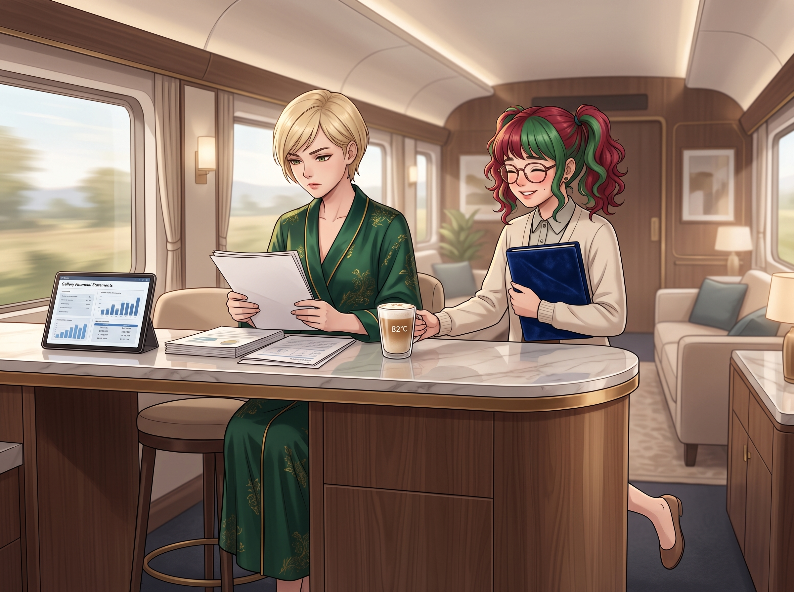

青出於藍（倒敘）

畫廊危機事件過去後的第三天，二號車廂的起居廂裡迎來了一個看似平靜的早晨。
Victoria 穿著一襲真絲晨袍，坐在中島吧台前，優雅地翻閱著畫廊上個月的財務報表。Chloe 正在吧台另一端百無聊賴地嚼著麥片，而 Max 和 Kate 則在沙發上整理著剛採購回來的底片和花種。
就在這時，Lily 抱著一個精緻的絲絨文件夾，輕手輕腳地走了過來。她先是將一杯溫度精準控制在 82 度的燕麥奶拿鐵輕輕放在 Victoria 手邊，然後露出了一個純潔無害、堪比天使降臨的微笑。
「Victoria 學姐，早安。」Lily 的聲音溫柔得像是一陣微風，「您最近籌備冬展真的太辛苦了，黑眼圈都快出來了。請務必喝點熱的暖暖胃。」
Victoria 端起咖啡抿了一口，對這個完美的溫度感到極度舒適。她高傲地點了點頭：「算妳有心，Lily。有什麼事嗎？」
一、糖衣炮彈與關懷開場
Lily 微微歪著頭，雙手交握在胸前，眼神中充滿了真誠的擔憂：「是這樣的，學姐。我昨晚幫您整理了畫廊的安保與公關支出報表。我發現，自從上週我幫您勸退了那位鬧事的先生，以及後來三位試圖在閉館後闖入的二流策展人後，畫廊的安保出勤率下降了 40%，潛在的公關危機處理費用更是節省了將近 5000 美金。」
「嗯，沒錯。」Victoria 放下咖啡杯，嘴角勾起一抹得意的冷笑，「妳那晚的表現確實勉強達到了 Chase 財團實習生的及格線。怎麼，想邀功？」
二、究極進化：Chase 式的降維打擊
「不敢，學姐。」Lily 依然保持著那副乖巧溫柔的模樣，但她緩緩地將手裡的絲絨文件夾推到了 Victoria 面前。
那是一份《實習生薪資結構調整協議書》。上面的加薪幅度，赫然寫著令人髮指的 45%。
Victoria 的瞳孔瞬間放大，差點把嘴裡的燕麥奶噴出來。她猛地抬起頭，名媛的氣場全開：「Lily！妳瘋了嗎？一個實習生要求 45% 的加薪？這簡直是光天化日之下的資本搶劫！」
就在這時，Lily 發動了。
她的目光極其自然地掃過 Victoria 桌上的財報，然後微微揚起下巴，眉毛以完美的 15 度角挑起，用最甜美的語氣，吐出了 Victoria 曾經親自傳授的職場絞殺術：
「我完全理解您的顧慮，Victoria 學姐。畢竟，對於一家缺乏前瞻性戰略眼光、資金鏈隨時會斷裂的普通三流畫廊來說，給一個實習生加薪 45% 確實會讓老闆夜不能寐。」
吧台另一邊的 Chloe 猛地被麥片嗆到，發出了劇烈的咳嗽聲。
Lily 沒有理會，繼續用那種溫柔得令人毛骨悚然的語氣說道：「但身為 Chase 財團未來的掌門人，我以為您的格局會比那些短視的暴發戶要大得多？您難道為了區區每個月一千多美金的差額，寧願去承擔一個巨大的人才流失風險嗎？」
三、致命一擊：Price 式的物理威脅
Victoria 被自己發明的階級嘲諷氣得渾身發抖，正要拍桌子反駁，Lily 卻不知何時從制服口袋裡掏出了一根黑色的髮夾，在白皙的指尖靈活地轉了兩圈。
「而且，Victoria 學姐……」Lily 的笑容更加燦爛了，她輕輕用髮夾敲了敲大理石桌面，發出清脆的噠噠聲，「我昨天無意中發現，畫廊 VIP 藏品室剛換的那批價值一萬美金的瑞士進口電子防盜鎖，其實存在一個非常致命的機械傳動漏洞。只要一根髮夾和七秒鐘，就能讓它徹底癱瘓。」
Lily 將髮夾收回口袋，身體微微前傾，直視著 Victoria 的眼睛：「您說，如果我這樣一個掌握了畫廊所有物理弱點、且能熟練運用人體神經麻痺技巧讓難纏客戶安靜下來的高級複合型安保人才，因為薪資過低而被競爭對手挖走……這對您的冬季特展，會是一場多麼獨特而平庸的災難呢？」
四、投降與惡霸們的狂歡
整個二號車廂陷入了死一般的寂靜。
Victoria 死死盯著眼前這隻披著羊皮的霸王龍。她的理智告訴她應該立刻叫保安把這個敲詐勒索的實習生扔出去，但她的商業直覺和那該死的驕傲卻在瘋狂尖叫：這簡直是個完美的商業談判天才！這話術、這威脅、這無懈可擊的表情管理！這全是我教出來的！
名媛深吸了一口氣，胸口劇烈起伏了幾下。最終，她咬著牙，從睡袍口袋裡掏出那支萬寶龍鋼筆，在協議書上龍飛鳳舞地簽下了自己的名字。
「給妳 50%。」Victoria 把文件砸在 Lily 面前，惡狠狠地說，但眼底卻閃爍著極度變態的欣賞，「明天起，妳不再是實習生了。妳是我的畫廊特聘危機處理與物理防禦總監。現在，拿著妳的錢，滾出我的視線！」
「謝謝老闆。祝您有美好的一天哦。」Lily 瞬間收起了所有的壓迫感，重新變回那個瑟瑟發抖的小白兔，深深鞠了一個躬，然後抱著文件夾歡天喜地地跑出了起居廂。
目睹了全程的 Chloe 已經笑得從吧台凳上滑到了地上，她用力捶著地板：「哈哈哈哈哈！大富婆，妳被自己養的蠱反噬了！她剛才那個 15 度的挑眉，簡直比妳還要欠揍一百倍！」
沙發上的 Max 絕望地舉起相機，拍下了 Victoria 簽字時那副肉痛卻又暗爽的扭曲表情。
「Kate，」Max 雙眼失去高光，靠在小天使的肩膀上，「我們真的完蛋了。波特蘭藝術圈會被這個融合了我們所有人缺點的終極怪物徹底統治的。」
Kate 則是輕輕順著 Max 的頭髮，看著 Lily 離開的方向，溫柔地笑了笑：「但妳不覺得，她剛才說『早安』的樣子，真的很有禮貌嗎？」
故事的時間點，實際發生在第二季波特蘭工坊時期